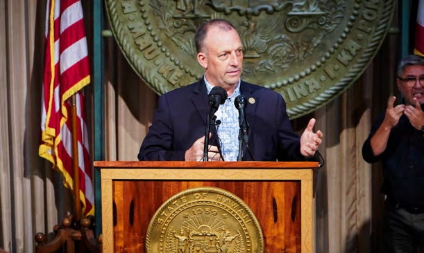
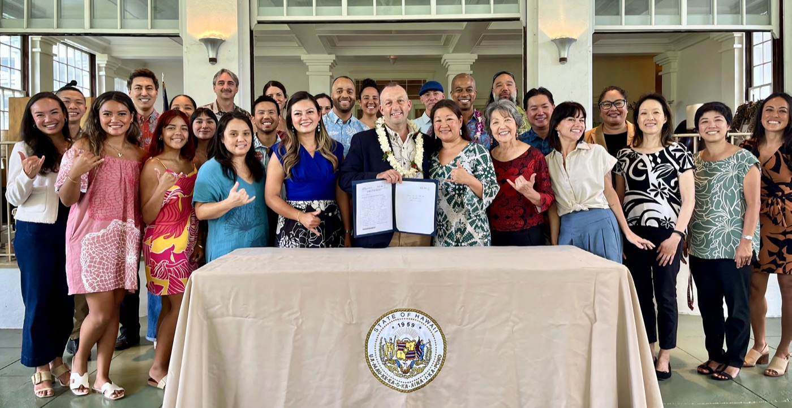

Hawaiʻi Appleseed is committed to a more socially and economically just Hawaiʻi, where everyone
has genuine opportunities to achieve economic security and fulfill their potential. We change systems to address
inequity and foster greater opportunity by conducting data analysis and research to address income inequality,
educating policymakers and the public, engaging in collaborative problem solving and coalition building, and
advocating for policy and systems change.
The work of Hawaiʻi Appleseed is about people. The issues we work on—housing, food, wages,
mobility, the state budget and taxation, and racial and indigenous equity—are important because they ensure people
have access to shelter, sustenance, and the means to survive and thrive individually and collectively. Addressing
these issues requires the knowledge and expertise of the people that have first-hand experience and live with the
adverse consequences of our flawed systems.
THE INVESTMENTS that Hawaiʻi's government makes in its people through the state budget should reflect
our shared priorities and values. This budget primer is intended to help readers understand how our state budget
works and to encourage budget and policy decisions that improve the lives of Hawaiʻi's people.
The state budget funds Hawaiʻi's three government branches: the Legislature; the Judiciary; and the Executive.
A small portion funds the Office of Hawaiian Affairs (OHA) as well. More than 99 percent of the state budget goes
toward funding the executive branch.
Legislature
Creates laws and decides how the state's money is spent.
Consists of the State Senate and House of Representatives, Office of the Auditor, Office of the Ombudsman, and the Legislative Reference Bureau.
Judiciary
Interprets laws and resolves legal cases through the court system.
Consists of the Hawaiʻi Supreme Court, Intermediate Court of Appeals, Land Court, Tax Appeal Court, Circuit Courts, Family Courts, District Courts, Environmental Courts, and Office of the Administrative Director of the Courts.

Executive
Enforces state laws and manages the daily operations of the government.
Consists of the Governor, Lieutenant Governor, State Departments, and the University of Hawaiʻi System.
Office of Hawaiian Affairs
A semi-autonomous state agency responsible for improving the wellbeing of Native Hawaiians.
Legislative appropriations represent only a small portion of OHA's resources.
BUDGET PRIMER • 3
Budget Process
Hawaiʻi uses a two-year (biennial) budget cycle. The full budget is passed in odd-numbered years, and
adjustments can be made in the second year. Fiscal Years (FY) cover July 1 through June 30, labeled by the
calendar year in which they end (e.g. FY 2027 runs from July 2026 through June 2027).
Figure 1. Hawaiʻi Budget Lifecycle
The governor submits the executive budget proposal to the legislature.
The legislature reviews, amends and passes the budget bill.
Emergency and supplemental appropriations are added if any are needed.
The governor signs the budget bill into law, with line-item veto power.
Funds are released to executive departments and agencies.
Agencies carry out spending.
Budget proposals are drafted by each branch.
4 • BUDGET PRIMER
HOW MONEY IS SPENT
Government spending is essential for the economy, especially in times of crisis. The executive branch alone
employs over 47,000 workers, not including contractors.1 These workers are responsible for running
Hawaiʻi's departments and agencies—a task that is only made possible with billions of dollars in funding.
There are three types of spending: operating, capital improvement, and one-time/emergency appropriations.
Operating Budget
Regular funding for state agencies, public services, and programs.
Capital Improvement Appropriations
Funds to build, maintain, or improve infrastructure, such as roads, schools, and hospitals.
One-Time & Emergency Appropriations
Temporary funding for unexpected needs, such as disaster response or special projects.
Since it manages the state's departments and agencies, the Executive Branch receives almost all of the funds
in each spending category.
Table 1. Budget Breakdown by Branch and Spending Category, Hawaiʻi, FY 2026–27
Executive2
Judiciary3
Legislature4 5
OHA6
Operating Budget
$20.32 billion
$218.77 million
$51.9 million
$6 million
Capital Improvement Appropriations
$4.53 billion
$45.4 million
$0
$0
One-Time Appropriations
$997.87 million
$684,385
$0
$55 million
Emergency Appropriations
$2.87 million
$0
$0
$0
Total
$25.85 billion
$264.85 million
$51.9 million
$61 million
BUDGET PRIMER • 5
Spending Categories
Operating Budget
Figure 2. Hawaiʻi State Budget by Branch and Department, FY2027
— click a department for details & tracker link
The Executive departments with the largest overall budgets are the Departments of Human Services,
Transportation, Budget and Finance, and Education. The Department of Transportation's Capital Improvement
Appropriations budget is larger than its operating budget—the state's airports, harbors, and highways are
in the middle of a multi-year construction cycle. The Department of Health has a larger operating budget than
all but four departments, and the DOE operating budget covers K–12 public school teacher salaries statewide.
6 • BUDGET PRIMER
Obligated Costs
Before the state can consider any other spending, the Hawaiʻi constitution says it must pay its
non-negotiable obligated costs. These costs include pensions, health benefits, Medicaid, and debt
payments—and they are worth roughly $5 billion, or a quarter of the state's operating budget. The share of the
operating budget that these costs consume is increasing each year, limiting the state's flexibility for new
investments in areas like housing, schools, economic development and climate resilience.
Except for Medicaid expenses, which are included in the budget for the Department of Human Services,
the costs named above are covered by the Department of Budget and Finance. These two departments have the
largest operating budgets, and obligated costs are a significant share for each.
Capital Improvement Appropriations
Figure 3. Distribution of Capital Improvement Project Funding, FY2027 ($Millions)
Transportation
Formal Education
All Others
Economic Development
Health
The total budget for Capital Improvement Projects (CIP) in FY2027 is $4.53 billion. Transportation-related
projects usually take up more than half of the CIP budget. This money is necessary for maintaining, among other
things, the state's airports, harbors, and its 2,433 miles of roads and highways.7
BUDGET PRIMER • 7

On May 30, 2025, advocates and lawmakers joined Governor Josh Green at Washington Place as he
signed Senate
Bill (SB) 1300 into law as Act
139. The law's FY27 appropriations take effect this year, expanding subsidized meal access to public school
students from households in the Asset-Limited, Income-Constrained, Employed (ALICE) category. // Will Caron,
Hawaiʻi Appleseed
One-Time and Emergency Appropriations
FY27 One-Time Appropriations
Transportation & Budget/Finance: $700 million in Act 99 — $600 million in county-surcharge transit funding and a new $100 million major disaster fund.8
Accounting, Transportation, Land: $200 million in Maui wildfire insurance proceeds to rebuild King Kamehameha III Elementary and restore Lahaina's harbor.9
DBEDT: $49.5 million for the New Aloha Stadium district.10
UH: $28.5 million in revenue bonds for student housing.11
Human Services: $16.5 million to supplement health-plan premiums for residents losing ACA coverage.12
Education: $3.4 million to expand free school meals to all ALICE households — the FY27 expansion promised in Act 139 (2025).13
FY27 Emergency Appropriations
Various Executive Departments: $2,871,954 in collective-bargaining cost items for Bargaining Unit 11 employees.14
The 2026 session also passed roughly $110 million in FY26 emergency appropriations — a $14.2 million backfill of funds redirected to food assistance during the 2025 federal shutdown, and $95.8 million for labor-grievance cost items.15
8 • BUDGET PRIMER
FUNDING THE BUDGET
Figure 4. Hawaiʻi Budget Means of Finance, FY2027 ($Billions)16
General Funds
Special Funds
Federal Funds
Other Funds
The state's spending primarily falls under three main categories: general funds, special funds and federal funds.
General Funds
General funds are mostly made up of tax revenue. The main pot of state money, these funds can be used for almost any state need.
Special Funds
Money from tuition, fees, settlements, etc., special funds can only be spent on a specific purpose, often related to the revenue source.
Federal Funds
Federal funds are monies provided to the state by the federal government, almost always in the form of grants.
BUDGET PRIMER • 9
Taxes
Figure 5. Projected Hawaiʻi State Tax Revenue, FY2027 ($Billions)17
General Excise Tax
Individual Income Tax
Transient Accommodations Tax
All Other Taxes
Corporate Income Tax
General Excise Tax
The GET is a tax on the sale of goods and services such as retail purchases and rent. Hawaiʻi relies on the GET for half of the state's tax revenue, but the tax increases the cost of living and hits low-income families the hardest.
Individual Income Tax
Hawaiʻi taxes those with high incomes at a higher marginal rate. Act 46 (2024) reduced income taxes for most people. However, these tax cuts cost the state budget $240.3 million in FY25. By FY32, the cuts will cost $1.45 billion annually.18
Transient Accomodations Tax
The TAT is a tax on hotel rooms, short-term rentals and cruise ships. It is paid mainly by tourists and supports the general fund and special funds for tourism promotion, resource management, climate resiliency and economic development.
10 • BUDGET PRIMER
Who Pays These Taxes?
Figure 6. Percentage of Income Paid in State and Local Taxes by Household Income
Quintile (2024)19
In Hawaiʻi, low- and middle-income families spend a larger share of their already stretched-thin income on
state and local taxes compared to wealthy families. This is due almost entirely to the General Excise Tax, which
is charged on basic needs like food, clothes and rent. When a low-income person and a wealthy person purchase
the same groceries, they pay the same dollar amount of tax. However, that dollar amount represents a much larger
chunk of the low-income person's paycheck, making it much harder to budget for—and too often keeping low-income
families trapped in cycles of poverty, debt and income insecurity.
Tax Credits
Tax credits are an effective tool available to lawmakers that are designed to lower or even eliminate the
tax liability owed to the state by people or businesses. The purpose of these tax credits is to stimulate the
economy by reducing costs either for businesses or struggling families that need help purchasing their basic
necessities.
In 2022, the state gave out $433.9 million in tax credits.20 Out of this amount, only $111 million
went to tax credits for lower-income households, such as the Earned Income Tax Credit and Refundable Food/Excise
Tax Credit. A larger amount—$168 million—went to tax credits for wealthier taxpayers and businesses, such as the
Renewable Energy Technologies Tax Credit and Film/Media Production Credit.